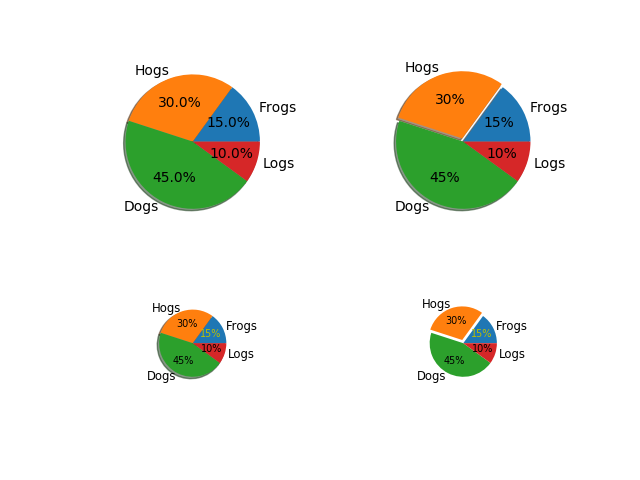

Version 2.1.2
Make a pie charts of varying size - see https://matplotlib.org/api/pyplot_api.html#matplotlib.pyplot.pie for the docstring.
This example shows a basic pie charts with labels optional features, like autolabeling the percentage, offsetting a slice with “explode” and adding a shadow, in different sizes.
import matplotlib.pyplot as plt
from matplotlib.gridspec import GridSpec
# Some data
labels = 'Frogs', 'Hogs', 'Dogs', 'Logs'
fracs = [15, 30, 45, 10]
explode = (0, 0.05, 0, 0)
# Make square figures and axes
the_grid = GridSpec(2, 2)
plt.subplot(the_grid[0, 0], aspect=1)
plt.pie(fracs, labels=labels, autopct='%1.1f%%', shadow=True)
plt.subplot(the_grid[0, 1], aspect=1)
plt.pie(fracs, explode=explode, labels=labels, autopct='%.0f%%', shadow=True)
plt.subplot(the_grid[1, 0], aspect=1)
patches, texts, autotexts = plt.pie(fracs, labels=labels,
autopct='%.0f%%',
shadow=True, radius=0.5)
# Make the labels on the small plot easier to read.
for t in texts:
t.set_size('smaller')
for t in autotexts:
t.set_size('x-small')
autotexts[0].set_color('y')
plt.subplot(the_grid[1, 1], aspect=1)
# Turn off shadow for tiny plot with exploded slice.
patches, texts, autotexts = plt.pie(fracs, explode=explode,
labels=labels, autopct='%.0f%%',
shadow=False, radius=0.5)
for t in texts:
t.set_size('smaller')
for t in autotexts:
t.set_size('x-small')
autotexts[0].set_color('y')
plt.show()
Total running time of the script: ( 0 minutes 0.168 seconds)